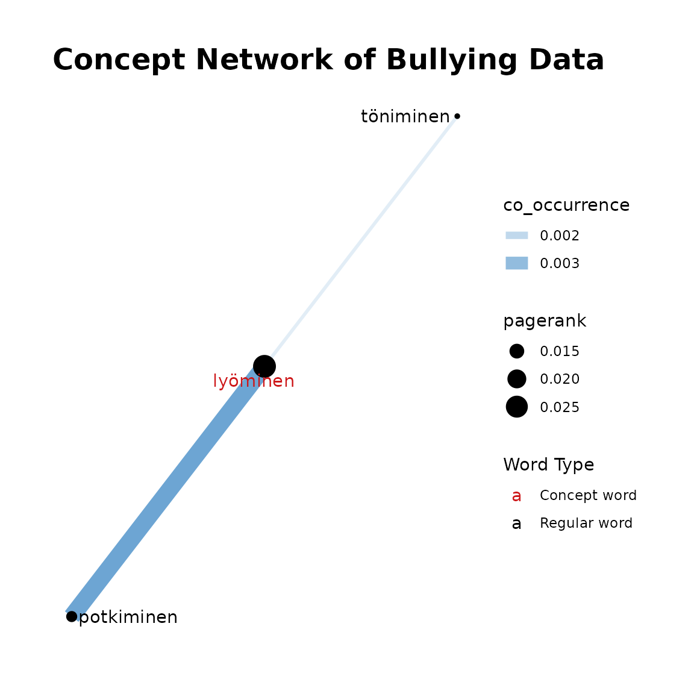
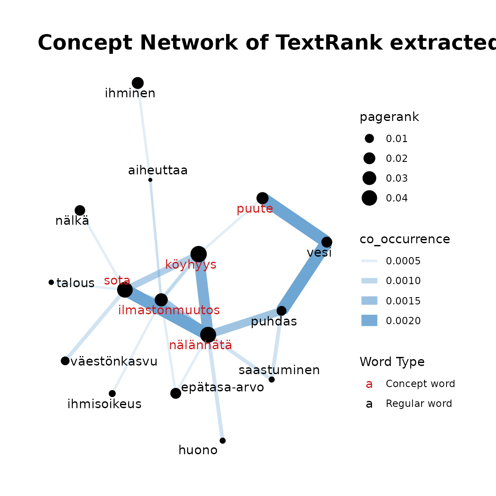

InDetail3-ConceptNetworkOverview
InDetail3-ConceptNetworkOverview.RmdIntroduction
This tutorial guides you through creation of a concept network plot. A concept network is a way to visualise words which often occur together.
Our concept network function uses the TextRank algorithm which is a graph-based ranking model for text processing. Vertices represent words and co-occurrence between words is shown through edges. Word importance is determined recursively (through the unsupervised learning TextRank algorithm) where words get more weight based on how many words co-occur and the weight of these co-occurring words.
To utilise the TextRank algorithm in finnsurveytext, we
use the textrank package. For further information on the
package, please see this
documentation. This package implements the TextRank and PageRank
algorithms. (PageRank is the algorithm that Google uses to rank
webpages.) You can read about the underlying TextRank algorithm here
and about the PageRank algorithm here.
Installation of package.
Once the package is installed, you can load the
finnsurveytext package as below: (Other required packages
such as dplyr and stringr will also be
installed if they are not currently installed in your environment.)
Overview of Functions
The functions covered in this tutorial are in r/03_concept_network.R. These are:
Data
There are two sets of data files available within the package which could be used in this tutorial. These files have been created following the process demonstrated in Tutorial 1. The suffixes ‘iso’, ‘nltk’ and ‘snow’ refer to the types of stopwords which have been removed during the data preparation activities.
FUNCTIONS
Concept Network - Search TextRank for Concepts
This function is used to find words which are related to a list of
provided terms. It utilises the textrank_keywords()
function which is part of the textrank package.
This function goes through the following process:
- separates the search string into individual terms
- applies the
textrank_keywords()function which finds n-grams in the text that occur multiple times - finds all pairs of words included in these common ngrams
- filters the pairs so that at least one of the pair is a searched term.
The function fst_cn_search() is demonstrated below.
bullying_concepts <- fst_cn_search(
data = df1,
concepts = "kiusata, lyöminen, lyödä, potkia"
)
dev_concepts <- fst_cn_search(
data = df2,
concepts = "köyhyys, nälänhätä, sota, ilmastonmuutos, puute"
)The resulting dataframe is formatted as below:
| keyword | ngram | freq | word1 | word2 |
|---|---|---|---|---|
| nälänhätä-sota | 2 | 7 | nälänhätä | sota |
| köyhyys-nälänhätä | 2 | 6 | köyhyys | nälänhätä |
| sota-nälänhätä-puhdas-vesi-puute | 5 | 4 | sota | nälänhätä |
| sota-nälänhätä-puhdas-vesi-puute | 5 | 4 | nälänhätä | puhdas |
| sota-nälänhätä-puhdas-vesi-puute | 5 | 4 | puhdas | vesi |
| sota-nälänhätä-puhdas-vesi-puute | 5 | 4 | vesi | puute |
| ilmastonmuutos-nälänhätä | 2 | 4 | ilmastonmuutos | nälänhätä |
| sota-köyhyys | 2 | 3 | sota | köyhyys |
| sota-väestönkasvu | 2 | 3 | sota | väestönkasvu |
| nälänhätä-huono | 2 | 3 | nälänhätä | huono |
To run fst_cn_search, we provide the following arguments
to the function:
-
datawhich is output from data preparation, prepared data in CoNLL-U format, such as the output offst_prepare_connlu(). -
conceptsis a string of concept terms to search for, separated by commas. -
relevant_posis a list of UPOS tags for inclusion, default is c(“NOUN”, “VERB”, “ADJ”, “ADV”).
Concept Network - Get TextRank Edges
The Get Edges function runs the search function,
fst_cn_search() and then filters for edges (pairs of
co-occurring words where one is a concept word) which are larger than
the threshold (occurring enough times). The resulting dataframe is
simplified in preparation for plotting.
bullying_edges <- fst_cn_edges(
data = df1,
concepts = "kiusata, lyöminen, lyödä, potkia"
)
dev_edges <- fst_cn_edges(
data = df2,
concepts = "köyhyys, nälänhätä, sota, ilmastonmuutos, puute",
threshold = 2
)The dataframe has a simplified format from the
fst_cn_search() results, with only columns “to”, “from” and
“n” which indicates the number of occurrences.
| from | to | co_occurrence |
|---|---|---|
| aiheuttaa | ilmastonmuutos | 0.00048 |
| ihminen | aiheuttaa | 0.00048 |
| ihminen | ihminen | 0.00048 |
| ilmastonmuutos | aiheuttaa | 0.00048 |
| ilmastonmuutos | epätasa-arvo | 0.00048 |
| ilmastonmuutos | ihmisoikeus | 0.00048 |
| ilmastonmuutos | köyhyys | 0.00048 |
| ilmastonmuutos | nälänhätä | 0.00144 |
| ilmastonmuutos | sota | 0.00048 |
| köyhyys | ilmastonmuutos | 0.00072 |
The arguments are the same as for fst_cn_search() plus
the threshold.
-
datawhich is output from data preparation, prepared data in CoNLL-U format, such as the output offst_prepare_connlu(). -
conceptsis a string of concept terms to search for, separated by commas. -
thresholdis the minimum number of occurrences threshold for ‘edge’ between a concept term and other word, default is NULL. -
normis the method for normalising the data. Valid settings are'number_words'(the number of words in the responses, default),'number_resp'(the number of responses), orNULL(raw count returned). Normalisation occurs after the threshold (if it exists) is applied. -
pos_filteris a list of UPOS tags for inclusion, default isNULL.
Concept Network - Get TextRank Nodes
This function runs the textrank_keywords() function
which is part of the textrank package and returns a
dataframe containing relevant lemmas and their associated PageRank.
It is demonstrated as follows:
bullying_nodes <- fst_cn_nodes(data = df1, edges = bullying_edges)
dev_nodes <- fst_cn_nodes(data = df2, edges = dev_edges)| lemma | pagerank |
|---|---|
| puhdas | 0.0123072 |
| vesi | 0.0160998 |
| nälänhätä | 0.0434178 |
| köyhyys | 0.0462711 |
| sota | 0.0414929 |
| ilmastonmuutos | 0.0262527 |
| nälkä | 0.0147598 |
| ihminen | 0.0206421 |
| puute | 0.0211868 |
| epätasa-arvo | 0.0160357 |
fst_cn_nodes() requires the following arguments:
-
datawhich is output from data preparation, prepared data in CoNLL-U format, such as the output offst_prepare_connlu(). -
edgesis the output fromfst_cn_edges(). -
pos_filteris a list of UPOS tags for inclusion, default isNULL.
Plot Concept Network
This function takes the output of the previous functions and plots the concept network. Edges between words in the plot show the number of occurrences with thicker and more opaque edges showing more occurrences. Similarly, the size of the word circle indicates the PageRank with higher PageRank resulting in a larger circle. Concept words are coloured red and other terms are black.
fst_cn_plot(
edges = bullying_edges,
nodes = bullying_nodes,
concepts = "kiusata, lyöminen",
title = "Bullying Data CN"
)Recall that for dev_edges we have set the
threshold as 2. This is why there are fewer words included
in the plot despite more words available (including stopwords) in this
data.
fst_cn_plot(
edges = dev_edges,
nodes = dev_nodes,
concepts = "köyhyys, nälänhätä, sota, ilmastonmuutos, puute"
)As fst_cn_plot() uses results from the previous
functions, it has 4 arguments:
-
edgesis the output offst_cn_edges(). -
nodesis the output offst_cn_nodes() -
conceptsis a list of terms which have been searched for, separated by commas. -
titleis an optional title for plot, default isNULLand a generic title, (‘TextRank extracted keyword occurrences’) will be used.
Plot Concept Network
If you don’t want to run all of the individual functions,
fst_cn_search(), fst_cn_edges(),
fst_cn_nodes(), and fst_cn_plot(), you can run
them all within the one function,
fst_concept_network().
This function is run as follows:
fst_concept_network(
data = df1,
concepts = "kiusata, lyöminen",
title = "Concept Network of Bullying Data"
)
fst_concept_network(
data = df2,
concepts = "köyhyys, nälänhätä, sota, ilmastonmuutos, puute"
)
fst_concept_network(
data = df2,
concepts = "köyhyys, nälänhätä, sota, ilmastonmuutos, puute",
threshold = 3
)The arguments are:
-
datawhich is output from data preparation, prepared data in CoNLL-U format, such as the output offst_prepare_connlu(). -
conceptis a string of concept terms to search for, separated by commas. -
thresholdis the minimum number of occurrences threshold for ‘edge’ between a concept term and other word, default is NULL. -
normis the method for normalising the data. Valid settings are'number_words'(the number of words in the responses, default),'number_resp'(the number of responses), orNULL(raw count returned). Normalisation occurs after the threshold (if it exists) is applied. -
pos_filteris a list of UPOS tags for inclusion, default isNULL. -
titleis an optional title for plot, default isNULLand a generic title, (‘TextRank extracted keyword occurrences’) will be used.
Conclusion
This tutorial ran you through the functions used to create Concept
Networks which are included in finnsurveytext. A concept
network visualises word importance and co-occurrence between words.
Citation
The Office of Ombudsman for Children: Child Barometer 2016 [dataset]. Version 1.0 (2016-12-09). Finnish Social Science Data Archive [distributor]. http://urn.fi/urn:nbn:fi:fsd:T-FSD3134
Finnish Children and Youth Foundation: Young People’s Views on Development Cooperation 2012 [dataset]. Version 2.0 (2019-01-22). Finnish Social Science Data Archive [distributor]. http://urn.fi/urn:nbn:fi:fsd:T-FSD2821